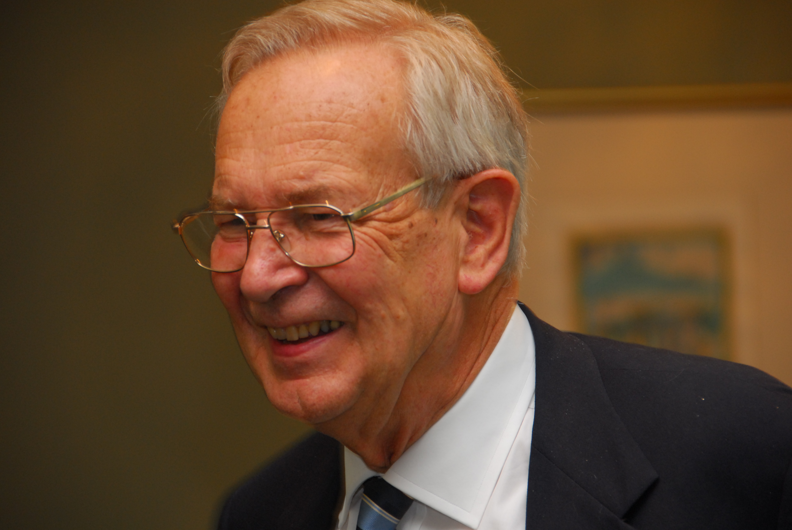

Please note: the AAS Obituaries are temporarily being hosted on this website while their full content is being ingested into the PubPub publishing platform newly adopted by the Bulletin of the American Astronomical Society. When the migration is complete, your existing links will take you to the final, migrated content. Contact peter.williams@aas.org with any questions.
Gustav Andreas Tammann (1932-2019)
Gustav Tammann died on Sunday the 6th of January 2019.
Gustav Andreas Tammann, a pillar of 20th century astrophysics, has passed away at the age of 86. During his long and successful astronomical career, he made seminal contributions to extragalactic astrophysics and cosmology. He is best known for his work towards the determination of the Hubble constant and the use of supernovae as cosmic distance indicators. For many years Tammann was the leading extragalactic astronomer in Europe. After receiving his degree from the University of Basel, Switzerland, Tammann moved to the Mount Wilson and Palomar Observatories in Pasadena, California, as a Research Associate. On his return to Europe he first held a professorship in Hamburg and from 1977 until his retirement in 2002 was Director of the Astronomical Institute in Basel.
While in Pasadena, Tammann and Allan Sandage initiated a research program resulting in a collaboration lasting over four decades to establish the cosmic distance ladder and ultimately measure the value of the Hubble constant. After preliminary work on the Cepheid period-luminosity relation (now called the Leavitt relation), they set out in 1974 to define the sequence of measurements, a series of stellar and galaxy calibrations at larger and larger distances resting on the previous step, until they would reach the smooth expansion field. They outlined a program, which they completed with only minor modifications after about 20 years. Every rung of the distance ladder was carefully investigated until they reached distances in the smooth Hubble flow to establish the current cosmic expansion rate. This required detailed analyses of many different astronomical objects and the corresponding understanding of the relevant astrophysics. They also realized that the local non-uniform matter distribution influences the value of the expansion rate and determined the distribution of galaxies and nearby galaxy clusters.
Tammann and Sandage published the Revised Shapley-Ames Catalogue in 1981 (with a further revision/expansion in 1987) and provided a first cut at the bright galaxy distribution. The original list of galaxies brighter than magnitude 13.2 (a total of 1246 galaxies) was updated with an additional 896 missing from the original Shapley-Ames Catalogue. The Virgo Cluster of galaxies is the closest overdensity and was extensively investigated through a dedicated large-scale imaging project. This observing program produced the first complete set of luminosity functions for different morphological galaxy types extending to dwarf galaxies. New dwarf galaxy types were described, e.g. nucleated dwarf galaxies and ultra-diffuse galaxies, now subjects of intense studies. The local velocity field – most notably the infall of the Local Group towards the Virgo Cluster – and the motion of the Milky Way relative to the microwave background were determined by Tammann and several of his students.
Beginning in the early 1970s Tammann studied supernovae, their rates and dependencies on host galaxies. In visionary publications he charted the use of supernovae for cosmology. He strongly advocated supernovae, in particular Type Ia supernovae, as cosmic distance indicators and for other cosmological applications, e.g. time dilation to test general relativity. He foresaw the importance of upcoming new facilities, in particular the Hubble Space Telescope and the new generation of ground-based 8m to 10m telescopes, for cosmology. Tammann, together with Sandage and Abhijit Saha, recognized the opportunity offered by HST to calibrate Type Ia supernovae through Cepheid stars. Over two decades they established Cepheid distances to nearby galaxies with observed Type Ia Supernovae and derived the Hubble constant. The competing HST Key Program adopted Type Ia Supernovae as their distance indicators in the Hubble flow following the precepts of Tammann and Sandage. HST calibrations of Type Ia supernovae through Cepheid distances continue in several major observing projects. The local expansion rate is now almost exclusively measured through Type Ia supernovae. The exact value of the Hubble constant remains a matter of vigorous research, although at a considerably higher accuracy and precision than the acrimonious debates of 50 to 20 years ago which formed an important part of Tammann’s scientific career. Tammann was further vindicated by the success of Type Ia supernovae providing evidence for an accelerated cosmic expansion.
Gustav Andreas Tammann received many distinctions including the Karl-Schwarzschild Medaille of the Astronomische Gesellschaft, the Albert-Einstein-Medaille of the Einstein Gesellschaft Bern and the Tomalla-Preis by the Tomalla Foundation. Tammann was a Fellow of the American Association for the Advancement of Science. He was a Visiting Associate at the Hale Observatories from 1976 until 1985. From 1981 to 1984 Tammann served as president of the Astronomische Gesellschaft. He held important functions for ESO (Research Associate 1975-1993 and Swiss Council member 1992-2002), ESA (Space Telescope Advisory Team 1982-1992) and was instrumental in the establishment of the International Space Science Institute in Berne, Switzerland. He was also an elected member of several European academies.
Tammann had a charming personality and exhibited an extraordinary friendliness. He was the proverbial gentleman astronomer in behaviour and attire. Tammann was involved in some of the most intense scientific discussions in cosmology and strongly advocated his view of the results. He could on occasion be an intense collaborator with clear opinions and strong ideas.
Tammann’s interest is history is documented by his book on Comet Halley (with Philippe Véron), in which they collected the historical records on the sightings of this iconic comet. Tammann was known to a wider public through his appearances on radio and television. His enthusiasm for astronomy easily transferred to his audience. He engaged his listeners and would often show his wit and broad knowledge in illuminating exchanges.
Obituary written by: Bruno Leibundgut (European Southern Observatory)
BAAS Citation: BAAS, 2020, 52, 0303
SAO/NASA ADS Bibcode: 2020BAAS...52b0303L